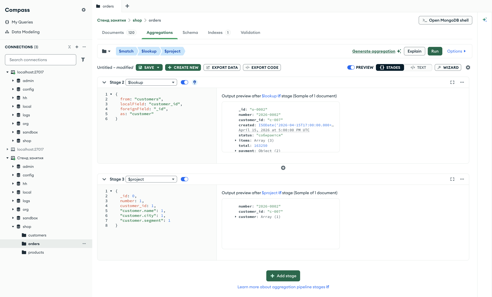

Справочник по MongoDB · модуль 6 · связи между коллекциями
6.1
$lookup: соединение
коллекций
Глава открывает модуль о связях между коллекциями. $lookup находит для каждого документа связанные документы другой коллекции и кладёт их в массив. В главе разобраны связи «один к одному» и «один ко многим», документы без пары, $unwind после $lookup и массив в поле связи. Отдельно показаны две записи, которые сервер принимает без ошибки, но которые дают неверный результат.
- Категория
- Агрегация
- Уровень
- Начальный
- Связанные темы
- $unwind (глава 4.6), $group (глава 4.4), $size и $map (главы 5.1 и 5.3), вложенные документы и ссылки (глава 1.2)
- Зачем это знать
- Собирать в одном ответе данные, которые хранятся в разных коллекциях: покупателя рядом с заказом, вакансии рядом с компанией
Как запускать примеры этой главы
mongodb-glava-6.1-python.zip, 63 КБmongodb-glava-6.1-ruby.zip, 63 КБmongodb-glava-6.1-go.zip, 70 КБmongodb-glava-6.1-cpp.zip, 68 КБ — все примеры главы готовыми программами, базы и стенд в Docker. В README.md — запуск в Docker, если Compass нет или он не подключается, и на установленном сервере с Compass, а также что должна напечатать каждая программа.lessons/ch6_1.py — пример вставляется в конец файлаlessons/ch6_1.rb — пример вставляется в конец файлаlessons/ch6_1.go — пример внутрь скобок в конце main, функции и типы — выше mainlessons/ch6_1.cpp — пример внутрь скобок в конце main, функции — выше maincd lessons, затем python ch6_1.pycd lessons, затем python3 ch6_1.py · в Docker: docker compose run --rm python lessons/ch6_1.pycd lessons, затем ruby ch6_1.rb · в Docker: docker compose run --rm ruby lessons/ch6_1.rbcd lessons, затем go run ch6_1.go · в Docker: docker compose run --rm go lessons/ch6_1.gocd lessons, затем g++ -std=c++17 ch6_1.cpp -o prog $(pkg-config --cflags --libs libmongocxx1) && ./prog · в Docker: docker compose run --rm cpp lessons/ch6_1.cpp§1Стадия $lookup
На бланке заказа записан не адрес покупателя, а номер его карточки: c-007. Чтобы узнать имя и город, оператор берёт картотеку покупателей и находит карточку с этим номером.
В магазине так устроены заказы и покупатели. Заказ хранит поле customer_id, а имя, город и сегмент покупателя лежат в коллекции customers, в документе с тем же _id. Такая связь называется ссылкой: документ хранит не сами данные, а значение, по которому их можно найти. До этой главы каждый запрос работал с одной коллекцией, и данные по ссылке приходилось искать вторым запросом.
Стадия $lookup делает поиск по ссылке внутри конвейера. Для каждого документа потока она находит в другой коллекции документы с подходящим значением поля и добавляет их массивом в новое поле. Четыре параметра:
{"$lookup": {"from": "customers", "localField": "customer_id", "foreignField": "_id", "as": "customer"}}
from — коллекция, где искать. localField — поле документа потока, значение которого ищется. foreignField — поле документов из from, с которым значение сравнивается на равенство. as — имя нового поля для найденных документов. Пример находит покупателя заказа 2026-0002.
pipeline = [
{"$match": {"_id": "o-0002"}},
{"$lookup": {
"from": "customers",
"localField": "customer_id",
"foreignField": "_id",
"as": "customer",
}},
{"$project": {
"_id": 0,
"number": 1,
"customer_id": 1,
"customer.name": 1,
"customer.city": 1,
"customer.segment": 1,
}},
]
for doc in orders.aggregate(pipeline):
print(doc)
mongocxx::pipeline pipeline; pipeline.match(make_document(kvp("_id", "o-0002"))); pipeline.lookup(make_document( kvp("from", "customers"), kvp("localField", "customer_id"), kvp("foreignField", "_id"), kvp("as", "customer"))); pipeline.project(make_document( kvp("_id", 0), kvp("number", 1), kvp("customer_id", 1), kvp("customer.name", 1), kvp("customer.city", 1), kvp("customer.segment", 1))); for (auto&& doc : orders.aggregate(pipeline)) { std::cout << bsoncxx::to_json(doc, bsoncxx::ExtendedJsonMode::k_relaxed) << std::endl; }
pipeline := mongo.Pipeline{
{{Key: "$match", Value: bson.D{{Key: "_id", Value: "o-0002"}}}},
{{Key: "$lookup", Value: bson.D{
{Key: "from", Value: "customers"},
{Key: "localField", Value: "customer_id"},
{Key: "foreignField", Value: "_id"},
{Key: "as", Value: "customer"}}}},
{{Key: "$project", Value: bson.D{
{Key: "_id", Value: 0},
{Key: "number", Value: 1},
{Key: "customer_id", Value: 1},
{Key: "customer.name", Value: 1},
{Key: "customer.city", Value: 1},
{Key: "customer.segment", Value: 1}}}},
}
cursor, _ := orders.Aggregate(ctx, pipeline)
for cursor.Next(ctx) {
var doc bson.D
cursor.Decode(&doc)
out, _ := bson.MarshalExtJSON(doc, false, false)
fmt.Println(string(out))
}
pipeline = [
{ "$match" => { "_id" => "o-0002" } },
{ "$lookup" => {
"from" => "customers",
"localField" => "customer_id",
"foreignField" => "_id",
"as" => "customer",
} },
{ "$project" => {
"_id" => 0,
"number" => 1,
"customer_id" => 1,
"customer.name" => 1,
"customer.city" => 1,
"customer.segment" => 1,
} },
]
orders.aggregate(pipeline).each { |doc| puts doc.inspect }
{'number': '2026-0002', 'customer_id': 'c-007', 'customer': [{'name': 'Елена Круглова', 'city': 'Новосибирск', 'segment': 'постоянный'}]}
{ "number" : "2026-0002", "customer_id" : "c-007", "customer" : [ { "name" : "Елена Круглова", "city" : "Новосибирск", "segment" : "постоянный" } ] }
{"number":"2026-0002","customer_id":"c-007","customer":[{"name":"Елена Круглова","city":"Новосибирск","segment":"постоянный"}]}
{"number"=>"2026-0002", "customer_id"=>"c-007", "customer"=>[{"name"=>"Елена Круглова", "city"=>"Новосибирск", "segment"=>"постоянный"}]}
У заказа появилось поле customer — массив из одного документа: Елена Круглова из Новосибирска, сегмент «постоянный». Массив, а не документ, потому что $lookup не знает заранее, сколько документов найдётся: ноль, один или много. Проекция оставила у найденного документа три поля, как у вложенного документа в главе 4.2.
Сервер берёт значение customer_id у заказа и ищет в customers документы, у которых _id равно ему. Все найденные документы попадают в массив customer. Документ заказа при этом остаётся один.
В SQL такая операция называется левым внешним соединением (LEFT JOIN): каждый документ потока остаётся, даже если пары не нашлось. Отличие от SQL — в форме результата: строки таблиц не склеиваются, найденные документы вкладываются массивом.
§2Документ вместо массива: $unwind
Когда пара всегда одна, массив из одного элемента неудобен: к полю покупателя приходится обращаться через массив. Стадия $unwind из главы 4.6 превращает такой массив во вложенный документ — из одного документа с массивом из одного элемента получается один документ. Дальше к сегменту покупателя можно обращаться путём "$customer.segment".
Пример считает выручку доставленных заказов по сегментам покупателей. Сегмента в заказе нет, он есть только у покупателя, поэтому без соединения такой отчёт не собрать.
pipeline = [
{"$match": {"status": "доставлен"}},
{"$lookup": {
"from": "customers",
"localField": "customer_id",
"foreignField": "_id",
"as": "customer",
}},
{"$unwind": "$customer"},
{"$group": {
"_id": "$customer.segment",
"orders": {"$sum": 1},
"revenue": {"$sum": "$total"},
}},
{"$sort": {"revenue": -1}},
]
for doc in orders.aggregate(pipeline):
print(doc)
mongocxx::pipeline pipeline; pipeline.match(make_document(kvp("status", "доставлен"))); pipeline.lookup(make_document( kvp("from", "customers"), kvp("localField", "customer_id"), kvp("foreignField", "_id"), kvp("as", "customer"))); pipeline.unwind("$customer"); pipeline.group(make_document( kvp("_id", "$customer.segment"), kvp("orders", make_document(kvp("$sum", 1))), kvp("revenue", make_document(kvp("$sum", "$total"))))); pipeline.sort(make_document(kvp("revenue", -1))); for (auto&& doc : orders.aggregate(pipeline)) { std::cout << bsoncxx::to_json(doc, bsoncxx::ExtendedJsonMode::k_relaxed) << std::endl; }
pipeline := mongo.Pipeline{
{{Key: "$match", Value: bson.D{{Key: "status", Value: "доставлен"}}}},
{{Key: "$lookup", Value: bson.D{
{Key: "from", Value: "customers"},
{Key: "localField", Value: "customer_id"},
{Key: "foreignField", Value: "_id"},
{Key: "as", Value: "customer"}}}},
{{Key: "$unwind", Value: "$customer"}},
{{Key: "$group", Value: bson.D{
{Key: "_id", Value: "$customer.segment"},
{Key: "orders", Value: bson.D{{Key: "$sum", Value: 1}}},
{Key: "revenue", Value: bson.D{{Key: "$sum", Value: "$total"}}}}}},
{{Key: "$sort", Value: bson.D{{Key: "revenue", Value: -1}}}},
}
cursor, _ := orders.Aggregate(ctx, pipeline)
for cursor.Next(ctx) {
var doc bson.D
cursor.Decode(&doc)
out, _ := bson.MarshalExtJSON(doc, false, false)
fmt.Println(string(out))
}
pipeline = [
{ "$match" => { "status" => "доставлен" } },
{ "$lookup" => {
"from" => "customers",
"localField" => "customer_id",
"foreignField" => "_id",
"as" => "customer",
} },
{ "$unwind" => "$customer" },
{ "$group" => {
"_id" => "$customer.segment",
"orders" => { "$sum" => 1 },
"revenue" => { "$sum" => "$total" },
} },
{ "$sort" => { "revenue" => -1 } },
]
orders.aggregate(pipeline).each { |doc| puts doc.inspect }
{'_id': 'постоянный', 'orders': 33, 'revenue': 4252190}
{'_id': 'vip', 'orders': 30, 'revenue': 3791840}
{'_id': 'новый', 'orders': 6, 'revenue': 488600}
{ "_id" : "постоянный", "orders" : 33, "revenue" : 4252190 }
{ "_id" : "vip", "orders" : 30, "revenue" : 3791840 }
{ "_id" : "новый", "orders" : 6, "revenue" : 488600 }
{"_id":"постоянный","orders":33,"revenue":4252190}
{"_id":"vip","orders":30,"revenue":3791840}
{"_id":"новый","orders":6,"revenue":488600}
{"_id"=>"постоянный", "orders"=>33, "revenue"=>4252190}
{"_id"=>"vip", "orders"=>30, "revenue"=>3791840}
{"_id"=>"новый", "orders"=>6, "revenue"=>488600}
Постоянные покупатели принесли 4 252 190 за 33 доставленных заказа, vip — 3 791 840 за 30, новые — 488 600 за 6. Вместе 69 заказов, как в главе 4.4: $unwind не потерял и не размножил заказы, потому что у каждого заказа ровно один покупатель.
Порядок стадий: $match по заказам, затем $lookup. Так сервер ищет покупателей только для 69 доставленных заказов, а не для всех 120.
§3Один ко многим
Связь можно пройти и в обратную сторону: от покупателя к его заказам. Тогда localField — _id покупателя, а foreignField — customer_id заказа. У одного покупателя заказов несколько, и массив получает несколько документов. Пример выводит для трёх покупателей число заказов и их номера.
pipeline = [
{"$match": {"_id": {"$in": ["c-001", "c-007", "c-020"]}}},
{"$lookup": {
"from": "orders",
"localField": "_id",
"foreignField": "customer_id",
"as": "orders",
}},
{"$project": {"name": 1, "count": {"$size": "$orders"}, "numbers": "$orders.number"}},
]
for doc in customers.aggregate(pipeline):
print(doc)
mongocxx::pipeline pipeline; pipeline.match(make_document( kvp("_id", make_document(kvp("$in", make_array("c-001", "c-007", "c-020")))))); pipeline.lookup(make_document( kvp("from", "orders"), kvp("localField", "_id"), kvp("foreignField", "customer_id"), kvp("as", "orders"))); pipeline.project(make_document( kvp("name", 1), kvp("count", make_document(kvp("$size", "$orders"))), kvp("numbers", "$orders.number"))); for (auto&& doc : customers.aggregate(pipeline)) { std::cout << bsoncxx::to_json(doc, bsoncxx::ExtendedJsonMode::k_relaxed) << std::endl; }
pipeline := mongo.Pipeline{
{{Key: "$match", Value: bson.D{
{Key: "_id", Value: bson.D{{Key: "$in", Value: bson.A{"c-001", "c-007", "c-020"}}}}}}},
{{Key: "$lookup", Value: bson.D{
{Key: "from", Value: "orders"},
{Key: "localField", Value: "_id"},
{Key: "foreignField", Value: "customer_id"},
{Key: "as", Value: "orders"}}}},
{{Key: "$project", Value: bson.D{
{Key: "name", Value: 1},
{Key: "count", Value: bson.D{{Key: "$size", Value: "$orders"}}},
{Key: "numbers", Value: "$orders.number"}}}},
}
cursor, _ := customers.Aggregate(ctx, pipeline)
for cursor.Next(ctx) {
var doc bson.D
cursor.Decode(&doc)
out, _ := bson.MarshalExtJSON(doc, false, false)
fmt.Println(string(out))
}
pipeline = [
{ "$match" => { "_id" => { "$in" => ["c-001", "c-007", "c-020"] } } },
{ "$lookup" => {
"from" => "orders",
"localField" => "_id",
"foreignField" => "customer_id",
"as" => "orders",
} },
{ "$project" => {
"name" => 1,
"count" => { "$size" => "$orders" },
"numbers" => "$orders.number",
} },
]
customers.aggregate(pipeline).each { |doc| puts doc.inspect }
{'_id': 'c-001', 'name': 'Анна Белова', 'count': 5, 'numbers': ['2026-0012', '2026-0035', '2026-0055', '2026-0059', '2026-0086']}
{'_id': 'c-007', 'name': 'Елена Круглова', 'count': 8, 'numbers': ['2026-0002', '2026-0003', '2026-0036', '2026-0056', '2026-0064', '2026-0085', '2026-0095', '2026-0117']}
{'_id': 'c-020', 'name': 'Егор Мельник', 'count': 2, 'numbers': ['2026-0010', '2026-0092']}
{ "_id" : "c-001", "name" : "Анна Белова", "count" : 5, "numbers" : [ "2026-0012", "2026-0035", "2026-0055", "2026-0059", "2026-0086" ] }
{ "_id" : "c-007", "name" : "Елена Круглова", "count" : 8, "numbers" : [ "2026-0002", "2026-0003", "2026-0036", "2026-0056", "2026-0064", "2026-0085", "2026-0095", "2026-0117" ] }
{ "_id" : "c-020", "name" : "Егор Мельник", "count" : 2, "numbers" : [ "2026-0010", "2026-0092" ] }
{"_id":"c-001","name":"Анна Белова","count":5,"numbers":["2026-0012","2026-0035","2026-0055","2026-0059","2026-0086"]}
{"_id":"c-007","name":"Елена Круглова","count":8,"numbers":["2026-0002","2026-0003","2026-0036","2026-0056","2026-0064","2026-0085","2026-0095","2026-0117"]}
{"_id":"c-020","name":"Егор Мельник","count":2,"numbers":["2026-0010","2026-0092"]}
{"_id"=>"c-001", "name"=>"Анна Белова", "count"=>5, "numbers"=>["2026-0012", "2026-0035", "2026-0055", "2026-0059", "2026-0086"]}
{"_id"=>"c-007", "name"=>"Елена Круглова", "count"=>8, "numbers"=>["2026-0002", "2026-0003", "2026-0036", "2026-0056", "2026-0064", "2026-0085", "2026-0095", "2026-0117"]}
{"_id"=>"c-020", "name"=>"Егор Мельник", "count"=>2, "numbers"=>["2026-0010", "2026-0092"]}
У Анны Беловой пять заказов, у Елены Кругловой — восемь, среди них и заказ 2026-0002 из §1, у Егора Мельника — два. Длина массива — число заказов, путь "$orders.number" — их номера, как путь к полю элементов в главе 5.1. Порядок заказов в массиве — порядок документов в коллекции orders.
§4Документы без пары
В базе hh у вакансии есть поле company с названием компании, а в коллекции companies — карточки компаний. Не у каждой компании есть открытая вакансия. Пример соединяет компании с их вакансиями.
pipeline = [
{"$lookup": {
"from": "vacancies",
"localField": "name",
"foreignField": "company",
"as": "vacancies",
}},
{"$project": {
"_id": 0,
"name": 1,
"count": {"$size": "$vacancies"},
"titles": "$vacancies.title",
}},
]
for doc in companies.aggregate(pipeline):
print(doc)
mongocxx::pipeline pipeline; pipeline.lookup(make_document( kvp("from", "vacancies"), kvp("localField", "name"), kvp("foreignField", "company"), kvp("as", "vacancies"))); pipeline.project(make_document( kvp("_id", 0), kvp("name", 1), kvp("count", make_document(kvp("$size", "$vacancies"))), kvp("titles", "$vacancies.title"))); for (auto&& doc : companies.aggregate(pipeline)) { std::cout << bsoncxx::to_json(doc, bsoncxx::ExtendedJsonMode::k_relaxed) << std::endl; }
pipeline := mongo.Pipeline{
{{Key: "$lookup", Value: bson.D{
{Key: "from", Value: "vacancies"},
{Key: "localField", Value: "name"},
{Key: "foreignField", Value: "company"},
{Key: "as", Value: "vacancies"}}}},
{{Key: "$project", Value: bson.D{
{Key: "_id", Value: 0},
{Key: "name", Value: 1},
{Key: "count", Value: bson.D{{Key: "$size", Value: "$vacancies"}}},
{Key: "titles", Value: "$vacancies.title"}}}},
}
cursor, _ := companies.Aggregate(ctx, pipeline)
for cursor.Next(ctx) {
var doc bson.D
cursor.Decode(&doc)
out, _ := bson.MarshalExtJSON(doc, false, false)
fmt.Println(string(out))
}
pipeline = [
{ "$lookup" => {
"from" => "vacancies",
"localField" => "name",
"foreignField" => "company",
"as" => "vacancies",
} },
{ "$project" => {
"_id" => 0,
"name" => 1,
"count" => { "$size" => "$vacancies" },
"titles" => "$vacancies.title",
} },
]
companies.aggregate(pipeline).each { |doc| puts doc.inspect }
{'name': 'Мосэнергосвязь', 'count': 1, 'titles': ['Администратор баз данных']}
{'name': 'МедСофт', 'count': 1, 'titles': ['Тестировщик']}
{'name': 'Яндекс', 'count': 0, 'titles': []}
{'name': 'Retail Lab', 'count': 1, 'titles': ['Frontend-разработчик']}
{'name': 'ЯрКом', 'count': 1, 'titles': ['Инженер сопровождения БД']}
{'name': 'Тензор', 'count': 2, 'titles': ['Junior Python-разработчик', 'Backend-разработчик .NET']}
{'name': 'ИП Сорокин', 'count': 0, 'titles': []}
{'name': 'Ozon Tech', 'count': 2, 'titles': ['Аналитик данных', 'Data-инженер']}
{ "name" : "Мосэнергосвязь", "count" : 1, "titles" : [ "Администратор баз данных" ] }
{ "name" : "МедСофт", "count" : 1, "titles" : [ "Тестировщик" ] }
{ "name" : "Яндекс", "count" : 0, "titles" : [ ] }
{ "name" : "Retail Lab", "count" : 1, "titles" : [ "Frontend-разработчик" ] }
{ "name" : "ЯрКом", "count" : 1, "titles" : [ "Инженер сопровождения БД" ] }
{ "name" : "Тензор", "count" : 2, "titles" : [ "Junior Python-разработчик", "Backend-разработчик .NET" ] }
{ "name" : "ИП Сорокин", "count" : 0, "titles" : [ ] }
{ "name" : "Ozon Tech", "count" : 2, "titles" : [ "Аналитик данных", "Data-инженер" ] }
{"name":"Мосэнергосвязь","count":1,"titles":["Администратор баз данных"]}
{"name":"МедСофт","count":1,"titles":["Тестировщик"]}
{"name":"Яндекс","count":0,"titles":[]}
{"name":"Retail Lab","count":1,"titles":["Frontend-разработчик"]}
{"name":"ЯрКом","count":1,"titles":["Инженер сопровождения БД"]}
{"name":"Тензор","count":2,"titles":["Junior Python-разработчик","Backend-разработчик .NET"]}
{"name":"ИП Сорокин","count":0,"titles":[]}
{"name":"Ozon Tech","count":2,"titles":["Аналитик данных","Data-инженер"]}
{"name"=>"Мосэнергосвязь", "count"=>1, "titles"=>["Администратор баз данных"]}
{"name"=>"МедСофт", "count"=>1, "titles"=>["Тестировщик"]}
{"name"=>"Яндекс", "count"=>0, "titles"=>[]}
{"name"=>"Retail Lab", "count"=>1, "titles"=>["Frontend-разработчик"]}
{"name"=>"ЯрКом", "count"=>1, "titles"=>["Инженер сопровождения БД"]}
{"name"=>"Тензор", "count"=>2, "titles"=>["Junior Python-разработчик", "Backend-разработчик .NET"]}
{"name"=>"ИП Сорокин", "count"=>0, "titles"=>[]}
{"name"=>"Ozon Tech", "count"=>2, "titles"=>["Аналитик данных", "Data-инженер"]}
Все восемь компаний остались в результате. У Тензора и Ozon Tech по две вакансии, у четырёх компаний по одной. У Яндекса и ИП Сорокин вакансий нет — массив пустой, длина 0. Это и есть «левое» соединение: документ без пары не исчезает, его массив просто пустой.
§5$unwind и документы без пары
В §2 $unwind не терял документы, потому что у каждого заказа есть покупатель. У компаний без вакансий массив пустой, а пустой массив, как показано в главе 4.6, не даёт ни одного документа. Пример считает документы после $unwind обычным способом и с параметром preserveNullAndEmptyArrays.
plain = [
{"$lookup": {
"from": "vacancies",
"localField": "name",
"foreignField": "company",
"as": "vacancies",
}},
{"$unwind": "$vacancies"},
{"$count": "docs"},
]
kept = [
{"$lookup": {
"from": "vacancies",
"localField": "name",
"foreignField": "company",
"as": "vacancies",
}},
{"$unwind": {"path": "$vacancies", "preserveNullAndEmptyArrays": True}},
{"$count": "docs"},
]
print("── $lookup и $unwind")
for doc in companies.aggregate(plain):
print(doc)
print("── с preserveNullAndEmptyArrays")
for doc in companies.aggregate(kept):
print(doc)
mongocxx::pipeline plain; plain.lookup(make_document( kvp("from", "vacancies"), kvp("localField", "name"), kvp("foreignField", "company"), kvp("as", "vacancies"))); plain.unwind("$vacancies"); plain.count("docs"); mongocxx::pipeline kept; kept.lookup(make_document( kvp("from", "vacancies"), kvp("localField", "name"), kvp("foreignField", "company"), kvp("as", "vacancies"))); kept.unwind(make_document(kvp("path", "$vacancies"), kvp("preserveNullAndEmptyArrays", true))); kept.count("docs"); std::cout << "── $lookup и $unwind" << std::endl; for (auto&& doc : companies.aggregate(plain)) { std::cout << bsoncxx::to_json(doc, bsoncxx::ExtendedJsonMode::k_relaxed) << std::endl; } std::cout << "── с preserveNullAndEmptyArrays" << std::endl; for (auto&& doc : companies.aggregate(kept)) { std::cout << bsoncxx::to_json(doc, bsoncxx::ExtendedJsonMode::k_relaxed) << std::endl; }
plain := mongo.Pipeline{
{{Key: "$lookup", Value: bson.D{
{Key: "from", Value: "vacancies"},
{Key: "localField", Value: "name"},
{Key: "foreignField", Value: "company"},
{Key: "as", Value: "vacancies"}}}},
{{Key: "$unwind", Value: "$vacancies"}},
{{Key: "$count", Value: "docs"}},
}
kept := mongo.Pipeline{
{{Key: "$lookup", Value: bson.D{
{Key: "from", Value: "vacancies"},
{Key: "localField", Value: "name"},
{Key: "foreignField", Value: "company"},
{Key: "as", Value: "vacancies"}}}},
{{Key: "$unwind", Value: bson.D{
{Key: "path", Value: "$vacancies"},
{Key: "preserveNullAndEmptyArrays", Value: true}}}},
{{Key: "$count", Value: "docs"}},
}
fmt.Println("── $lookup и $unwind")
cursor, _ := companies.Aggregate(ctx, plain)
for cursor.Next(ctx) {
var doc bson.D
cursor.Decode(&doc)
out, _ := bson.MarshalExtJSON(doc, false, false)
fmt.Println(string(out))
}
fmt.Println("── с preserveNullAndEmptyArrays")
cursor, _ = companies.Aggregate(ctx, kept)
for cursor.Next(ctx) {
var doc bson.D
cursor.Decode(&doc)
out, _ := bson.MarshalExtJSON(doc, false, false)
fmt.Println(string(out))
}
plain = [
{ "$lookup" => {
"from" => "vacancies",
"localField" => "name",
"foreignField" => "company",
"as" => "vacancies",
} },
{ "$unwind" => "$vacancies" },
{ "$count" => "docs" },
]
kept = [
{ "$lookup" => {
"from" => "vacancies",
"localField" => "name",
"foreignField" => "company",
"as" => "vacancies",
} },
{ "$unwind" => { "path" => "$vacancies", "preserveNullAndEmptyArrays" => true } },
{ "$count" => "docs" },
]
puts "── $lookup и $unwind"
companies.aggregate(plain).each { |doc| puts doc.inspect }
puts "── с preserveNullAndEmptyArrays"
companies.aggregate(kept).each { |doc| puts doc.inspect }
── $lookup и $unwind
{'docs': 8}
── с preserveNullAndEmptyArrays
{'docs': 10}
── $lookup и $unwind
{ "docs" : 8 }
── с preserveNullAndEmptyArrays
{ "docs" : 10 }
── $lookup и $unwind
{"docs":8}
── с preserveNullAndEmptyArrays
{"docs":10}
── $lookup и $unwind
{"docs"=>8}
── с preserveNullAndEmptyArrays
{"docs"=>10}
Обычный $unwind дал 8 документов — по одному на вакансию; Яндекс и ИП Сорокин исчезли. С preserveNullAndEmptyArrays документов 10: две компании без вакансий остались, поля vacancies у них нет. Пара $lookup и обычного $unwind работает как внутреннее соединение (INNER JOIN), с параметром — как левое.
| Компания | Вакансий | $unwind | с preserveNull… |
|---|---|---|---|
| Тензор, Ozon Tech | по 2 | по 2 документа | по 2 документа |
| Мосэнергосвязь, МедСофт, Retail Lab, ЯрКом | по 1 | по 1 документу | по 1 документу |
| Яндекс, ИП Сорокин | 0 | исчезают | по 1 документу без vacancies |
| Всего | 8 | 8 | 10 |
Число документов после $unwind — сумма длин массивов. Документы с пустым массивом добавляет только параметр preserveNullAndEmptyArrays.
§6Массив в localField
Позиции заказа ссылаются на товары по артикулу: у каждой позиции поле sku. Путь "items.sku" — массив артикулов. Если localField — массив, $lookup находит документы, у которых foreignField равно любому из его элементов. Пример находит товары заказа 2026-0002 и выводит у каждого артикул и рейтинг.
pipeline = [
{"$match": {"_id": "o-0002"}},
{"$lookup": {
"from": "products",
"localField": "items.sku",
"foreignField": "sku",
"as": "goods",
}},
{"$project": {
"_id": 0,
"skus": "$items.sku",
"goods": {"$map": {
"input": "$goods",
"in": {"sku": "$$this.sku", "rating": "$$this.rating"},
}},
}},
]
for doc in orders.aggregate(pipeline):
print(doc)
mongocxx::pipeline pipeline; pipeline.match(make_document(kvp("_id", "o-0002"))); pipeline.lookup(make_document( kvp("from", "products"), kvp("localField", "items.sku"), kvp("foreignField", "sku"), kvp("as", "goods"))); pipeline.project(make_document( kvp("_id", 0), kvp("skus", "$items.sku"), kvp("goods", make_document( kvp("$map", make_document( kvp("input", "$goods"), kvp("in", make_document(kvp("sku", "$$this.sku"), kvp("rating", "$$this.rating"))))))))); for (auto&& doc : orders.aggregate(pipeline)) { std::cout << bsoncxx::to_json(doc, bsoncxx::ExtendedJsonMode::k_relaxed) << std::endl; }
pipeline := mongo.Pipeline{
{{Key: "$match", Value: bson.D{{Key: "_id", Value: "o-0002"}}}},
{{Key: "$lookup", Value: bson.D{
{Key: "from", Value: "products"},
{Key: "localField", Value: "items.sku"},
{Key: "foreignField", Value: "sku"},
{Key: "as", Value: "goods"}}}},
{{Key: "$project", Value: bson.D{
{Key: "_id", Value: 0},
{Key: "skus", Value: "$items.sku"},
{Key: "goods", Value: bson.D{
{Key: "$map", Value: bson.D{
{Key: "input", Value: "$goods"},
{Key: "in", Value: bson.D{
{Key: "sku", Value: "$$this.sku"},
{Key: "rating", Value: "$$this.rating"}}}}}}}}}},
}
cursor, _ := orders.Aggregate(ctx, pipeline)
for cursor.Next(ctx) {
var doc bson.D
cursor.Decode(&doc)
out, _ := bson.MarshalExtJSON(doc, false, false)
fmt.Println(string(out))
}
pipeline = [
{ "$match" => { "_id" => "o-0002" } },
{ "$lookup" => {
"from" => "products",
"localField" => "items.sku",
"foreignField" => "sku",
"as" => "goods",
} },
{ "$project" => {
"_id" => 0,
"skus" => "$items.sku",
"goods" => { "$map" => {
"input" => "$goods",
"in" => { "sku" => "$$this.sku", "rating" => "$$this.rating" },
} },
} },
]
orders.aggregate(pipeline).each { |doc| puts doc.inspect }
{'skus': ['SKU-NB-002', 'SKU-PR-014', 'SKU-PR-013'], 'goods': [{'sku': 'SKU-NB-002', 'rating': 4.3}, {'sku': 'SKU-PR-013', 'rating': 4.3}, {'sku': 'SKU-PR-014', 'rating': 4.9}]}
{ "skus" : [ "SKU-NB-002", "SKU-PR-014", "SKU-PR-013" ], "goods" : [ { "sku" : "SKU-NB-002", "rating" : 4.2999999999999998224 }, { "sku" : "SKU-PR-013", "rating" : 4.2999999999999998224 }, { "sku" : "SKU-PR-014", "rating" : 4.9000000000000003553 } ] }
{"skus":["SKU-NB-002","SKU-PR-014","SKU-PR-013"],"goods":[{"sku":"SKU-NB-002","rating":4.3},{"sku":"SKU-PR-013","rating":4.3},{"sku":"SKU-PR-014","rating":4.9}]}
{"skus"=>["SKU-NB-002", "SKU-PR-014", "SKU-PR-013"], "goods"=>[{"sku"=>"SKU-NB-002", "rating"=>4.3}, {"sku"=>"SKU-PR-013", "rating"=>4.3}, {"sku"=>"SKU-PR-014", "rating"=>4.9}]}
Найдены три товара — по одному на артикул. Порядок в goods отличается от порядка в skus: ноутбук, наушники, веб-камера вместо ноутбука, веб-камеры, наушников. Найденные документы идут в порядке коллекции products, а не в порядке массива. Если порядок важен, найденные товары сопоставляют с позициями по артикулу.
§7Опечатка в from
Коллекция в from указана как customer — без последней буквы. Пример повторяет запрос из §1 с этой опечаткой.
pipeline = [
{"$match": {"_id": "o-0002"}},
{"$lookup": {
"from": "customer",
"localField": "customer_id",
"foreignField": "_id",
"as": "customer",
}},
{"$project": {"_id": 0, "number": 1, "customer": 1}},
]
for doc in orders.aggregate(pipeline):
print(doc)
mongocxx::pipeline pipeline; pipeline.match(make_document(kvp("_id", "o-0002"))); pipeline.lookup(make_document( kvp("from", "customer"), kvp("localField", "customer_id"), kvp("foreignField", "_id"), kvp("as", "customer"))); pipeline.project(make_document(kvp("_id", 0), kvp("number", 1), kvp("customer", 1))); for (auto&& doc : orders.aggregate(pipeline)) { std::cout << bsoncxx::to_json(doc, bsoncxx::ExtendedJsonMode::k_relaxed) << std::endl; }
pipeline := mongo.Pipeline{
{{Key: "$match", Value: bson.D{{Key: "_id", Value: "o-0002"}}}},
{{Key: "$lookup", Value: bson.D{
{Key: "from", Value: "customer"},
{Key: "localField", Value: "customer_id"},
{Key: "foreignField", Value: "_id"},
{Key: "as", Value: "customer"}}}},
{{Key: "$project", Value: bson.D{
{Key: "_id", Value: 0},
{Key: "number", Value: 1},
{Key: "customer", Value: 1}}}},
}
cursor, _ := orders.Aggregate(ctx, pipeline)
for cursor.Next(ctx) {
var doc bson.D
cursor.Decode(&doc)
out, _ := bson.MarshalExtJSON(doc, false, false)
fmt.Println(string(out))
}
pipeline = [
{ "$match" => { "_id" => "o-0002" } },
{ "$lookup" => {
"from" => "customer",
"localField" => "customer_id",
"foreignField" => "_id",
"as" => "customer",
} },
{ "$project" => { "_id" => 0, "number" => 1, "customer" => 1 } },
]
orders.aggregate(pipeline).each { |doc| puts doc.inspect }
{'number': '2026-0002', 'customer': []}
{ "number" : "2026-0002", "customer" : [ ] }
{"number":"2026-0002","customer":[]}
{"number"=>"2026-0002", "customer"=>[]}
Ошибки нет: customer — пустой массив. Сервер ищет в коллекции, которой нет, а несуществующая коллекция для чтения — то же, что пустая. Если $lookup вернул пустой массив у всех документов сразу, первым делом проверяют имя коллекции в from.
§8Поле связи отсутствует
Если у документа нет поля из localField, сервер считает его значение равным null. А null в сравнении на равенство подходит к документам, у которых поля foreignField нет, — так же работает фильтр {"поле": null} из главы 2.5. Пример ищет для покупательницы c-001 заказы по полю referrer, которого у покупателей нет, и сравнивает его с полем promo заказов.
pipeline = [
{"$match": {"_id": "c-001"}},
{"$lookup": {
"from": "orders",
"localField": "referrer",
"foreignField": "promo",
"as": "found",
}},
{"$project": {"_id": 0, "name": 1, "found": {"$size": "$found"}}},
]
for doc in customers.aggregate(pipeline):
print(doc)
mongocxx::pipeline pipeline; pipeline.match(make_document(kvp("_id", "c-001"))); pipeline.lookup(make_document( kvp("from", "orders"), kvp("localField", "referrer"), kvp("foreignField", "promo"), kvp("as", "found"))); pipeline.project(make_document( kvp("_id", 0), kvp("name", 1), kvp("found", make_document(kvp("$size", "$found"))))); for (auto&& doc : customers.aggregate(pipeline)) { std::cout << bsoncxx::to_json(doc, bsoncxx::ExtendedJsonMode::k_relaxed) << std::endl; }
pipeline := mongo.Pipeline{
{{Key: "$match", Value: bson.D{{Key: "_id", Value: "c-001"}}}},
{{Key: "$lookup", Value: bson.D{
{Key: "from", Value: "orders"},
{Key: "localField", Value: "referrer"},
{Key: "foreignField", Value: "promo"},
{Key: "as", Value: "found"}}}},
{{Key: "$project", Value: bson.D{
{Key: "_id", Value: 0},
{Key: "name", Value: 1},
{Key: "found", Value: bson.D{{Key: "$size", Value: "$found"}}}}}},
}
cursor, _ := customers.Aggregate(ctx, pipeline)
for cursor.Next(ctx) {
var doc bson.D
cursor.Decode(&doc)
out, _ := bson.MarshalExtJSON(doc, false, false)
fmt.Println(string(out))
}
pipeline = [
{ "$match" => { "_id" => "c-001" } },
{ "$lookup" => {
"from" => "orders",
"localField" => "referrer",
"foreignField" => "promo",
"as" => "found",
} },
{ "$project" => { "_id" => 0, "name" => 1, "found" => { "$size" => "$found" } } },
]
customers.aggregate(pipeline).each { |doc| puts doc.inspect }
{'name': 'Анна Белова', 'found': 80}
{ "name" : "Анна Белова", "found" : 80 }
{"name":"Анна Белова","found":80}
{"name"=>"Анна Белова", "found"=>80}
Найдено 80 заказов — все заказы без промокода. Ни один из них к покупательнице не относится. Ошибки нет, а результат похож на настоящий. Поэтому перед $lookup по необязательному полю отбирают документы, у которых поле есть: {"$match": {"referrer": {"$exists": true}}}.
| Заказы | promo | Равно отсутствующему referrer? | Попали в found |
|---|---|---|---|
| 80 заказов без промокода | поля нет | да — оба отсутствуют | 80 |
| 40 заказов с промокодом | SPRING10, LOYAL15, FIRST5 | нет | 0 |
Отсутствующее поле с обеих сторон считается совпадением. Так легко получить «найденные» документы, которые с исходным никак не связаны.
§9Записи, которые сервер не принимает
Две записи $lookup сервер отклоняет при разборе запроса.
from pymongo.errors import OperationFailure no_as = [ {"$lookup": { "from": "customers", "localField": "customer_id", "foreignField": "_id", }}, ] other_db = [ {"$lookup": { "from": {"db": "org", "coll": "employees"}, "localField": "customer_id", "foreignField": "_id", "as": "x", }}, ] print("── нет as") try: for doc in orders.aggregate(no_as): print(doc) except OperationFailure as e: print("код", e.code) print(e.details["errmsg"]) print("── коллекция другой базы") try: for doc in orders.aggregate(other_db): print(doc) except OperationFailure as e: print("код", e.code) print(e.details["errmsg"])
mongocxx::pipeline no_as; no_as.lookup(make_document( kvp("from", "customers"), kvp("localField", "customer_id"), kvp("foreignField", "_id"))); mongocxx::pipeline other_db; other_db.lookup(make_document( kvp("from", make_document(kvp("db", "org"), kvp("coll", "employees"))), kvp("localField", "customer_id"), kvp("foreignField", "_id"), kvp("as", "x"))); std::cout << "── нет as" << std::endl; try { for (auto&& doc : orders.aggregate(no_as)) { std::cout << bsoncxx::to_json(doc) << std::endl; } } catch (const mongocxx::operation_exception& e) { std::cout << "код " << e.code().value() << std::endl; std::cout << e.what() << std::endl; } std::cout << "── коллекция другой базы" << std::endl; try { for (auto&& doc : orders.aggregate(other_db)) { std::cout << bsoncxx::to_json(doc) << std::endl; } } catch (const mongocxx::operation_exception& e) { std::cout << "код " << e.code().value() << std::endl; std::cout << e.what() << std::endl; }
noAs := mongo.Pipeline{
{{Key: "$lookup", Value: bson.D{
{Key: "from", Value: "customers"},
{Key: "localField", Value: "customer_id"},
{Key: "foreignField", Value: "_id"}}}},
}
otherDb := mongo.Pipeline{
{{Key: "$lookup", Value: bson.D{
{Key: "from", Value: bson.D{{Key: "db", Value: "org"}, {Key: "coll", Value: "employees"}}},
{Key: "localField", Value: "customer_id"},
{Key: "foreignField", Value: "_id"},
{Key: "as", Value: "x"}}}},
}
fmt.Println("── нет as")
_, err := orders.Aggregate(ctx, noAs)
var ce mongo.CommandError
if errors.As(err, &ce) {
fmt.Println("код", ce.Code)
fmt.Println(ce.Message)
}
fmt.Println("── коллекция другой базы")
_, err = orders.Aggregate(ctx, otherDb)
if errors.As(err, &ce) {
fmt.Println("код", ce.Code)
fmt.Println(ce.Message)
}
no_as = [
{ "$lookup" => {
"from" => "customers",
"localField" => "customer_id",
"foreignField" => "_id",
} },
]
other_db = [
{ "$lookup" => {
"from" => { "db" => "org", "coll" => "employees" },
"localField" => "customer_id",
"foreignField" => "_id",
"as" => "x",
} },
]
puts "── нет as"
begin
orders.aggregate(no_as).each { |doc| puts doc.inspect }
rescue Mongo::Error::OperationFailure => e
puts "код #{e.code}"
puts e.document["errmsg"]
end
puts "── коллекция другой базы"
begin
orders.aggregate(other_db).each { |doc| puts doc.inspect }
rescue Mongo::Error::OperationFailure => e
puts "код #{e.code}"
puts e.document["errmsg"]
end
── нет as
код 9
must specify 'as' field for a $lookup
── коллекция другой базы
код 9
$lookup with syntax {from: {db:<>, coll:<>},..} is not supported for db: org and coll: employees
── нет as
код 9
must specify 'as' field for a $lookup: server error code 9: generic server error
── коллекция другой базы
код 9
$lookup with syntax {from: {db:<>, coll:<>},..} is not supported for db: org and coll: employees: server error code 9: generic server error
── нет as
код 9
must specify 'as' field for a $lookup
── коллекция другой базы
код 9
$lookup with syntax {from: {db:<>, coll:<>},..} is not supported for db: org and coll: employees
── нет as
код 9
must specify 'as' field for a $lookup
── коллекция другой базы
код 9
$lookup with syntax {from: {db:<>, coll:<>},..} is not supported for db: org and coll: employees
Без as — ошибка 9: результату нужно имя поля. Документ {"db": "org", "coll": "employees"} в from — тоже ошибка 9: $lookup соединяет коллекции одной базы. Конвейер по shop.orders может искать только в коллекциях базы shop.
§10$lookup в Compass
На кадре — конвейер из §1 на вкладке Aggregations коллекции shop.orders: $match по заказу o-0002, $lookup в коллекцию покупателей и $project.

Кадр начинается со стадии $lookup: в её редакторе — четыре параметра, как в коде. Справа — образец результата, Sample of 1 document: заказ со всеми полями, поле customer ниже края образца, его видно прокруткой. Под стадией $project остались number, customer_id и customer с отметкой Array (1) — массив из одного документа покупателя; треугольник слева раскрывает его.
§11Частые ошибки
| Что написано | Что происходит | Как правильно |
|---|---|---|
"from": "customer" | Пустой массив у каждого документа без ошибки: коллекции с таким именем нет, совпадений нет | Проверить имя коллекции: "customers"; пустой результат у всех документов — признак опечатки |
localField — поле, которого нет у документа | Сервер сравнивает отсутствующее значение с foreignField и присоединяет все документы, где этого поля тоже нет | Перед $lookup отобрать документы, у которых поле есть: {"$match": {"поле": {"$exists": true}}} |
{"$unwind": "$vacancies"} после $lookup | Документы без совпадений исчезают из потока: пустой массив не даёт ни одного документа | {"path": "$vacancies", "preserveNullAndEmptyArrays": true} |
$lookup без as | Ошибка 9: имя поля для результата обязательно | "as": "customer" |
"from": {"db": "org", "coll": "employees"} | Ошибка 9: $lookup соединяет коллекции одной базы | Соединять коллекции одной базы; данные другой базы сначала перенести стадией $merge |
| Что написано | Что происходит | Как правильно |
|---|---|---|
"from": "customer" | Пустой массив у каждого документа без ошибки: коллекции с таким именем нет, совпадений нет | Проверить имя коллекции: "customers"; пустой результат у всех документов — признак опечатки |
localField — поле, которого нет у документа | Сервер сравнивает отсутствующее значение с foreignField и присоединяет все документы, где этого поля тоже нет | Перед $lookup отобрать документы, у которых поле есть: {"$match": {"поле": {"$exists": true}}} |
{"$unwind": "$vacancies"} после $lookup | Документы без совпадений исчезают из потока: пустой массив не даёт ни одного документа | {"path": "$vacancies", "preserveNullAndEmptyArrays": true} |
$lookup без as | Ошибка 9: имя поля для результата обязательно | "as": "customer" |
"from": {"db": "org", "coll": "employees"} | Ошибка 9: $lookup соединяет коллекции одной базы | Соединять коллекции одной базы; данные другой базы сначала перенести стадией $merge |
| Что написано | Что происходит | Как правильно |
|---|---|---|
"from": "customer" | Пустой массив у каждого документа без ошибки: коллекции с таким именем нет, совпадений нет | Проверить имя коллекции: "customers"; пустой результат у всех документов — признак опечатки |
localField — поле, которого нет у документа | Сервер сравнивает отсутствующее значение с foreignField и присоединяет все документы, где этого поля тоже нет | Перед $lookup отобрать документы, у которых поле есть: {"$match": {"поле": {"$exists": true}}} |
{"$unwind": "$vacancies"} после $lookup | Документы без совпадений исчезают из потока: пустой массив не даёт ни одного документа | {"path": "$vacancies", "preserveNullAndEmptyArrays": true} |
$lookup без as | Ошибка 9: имя поля для результата обязательно | "as": "customer" |
"from": {"db": "org", "coll": "employees"} | Ошибка 9: $lookup соединяет коллекции одной базы | Соединять коллекции одной базы; данные другой базы сначала перенести стадией $merge |
| Что написано | Что происходит | Как правильно |
|---|---|---|
"from": "customer" | Пустой массив у каждого документа без ошибки: коллекции с таким именем нет, совпадений нет | Проверить имя коллекции: "customers"; пустой результат у всех документов — признак опечатки |
localField — поле, которого нет у документа | Сервер сравнивает отсутствующее значение с foreignField и присоединяет все документы, где этого поля тоже нет | Перед $lookup отобрать документы, у которых поле есть: {"$match": {"поле": {"$exists": true}}} |
{"$unwind": "$vacancies"} после $lookup | Документы без совпадений исчезают из потока: пустой массив не даёт ни одного документа | {"path": "$vacancies", "preserveNullAndEmptyArrays": true} |
$lookup без as | Ошибка 9: имя поля для результата обязательно | "as": "customer" |
"from": {"db": "org", "coll": "employees"} | Ошибка 9: $lookup соединяет коллекции одной базы | Соединять коллекции одной базы; данные другой базы сначала перенести стадией $merge |
§12Проверьте себя
Почему результат $lookup — массив, даже если пара всегда одна?
Сервер не знает заранее, сколько документов найдётся. Если пара одна, массив превращают в документ стадией $unwind.
Что будет с документом, для которого пары не нашлось?
Он остаётся в потоке с пустым массивом. Исчезнет он, только если после $lookup стоит $unwind без preserveNullAndEmptyArrays.
Что вернёт $lookup, если в from опечатка?
Пустой массив у каждого документа, без ошибки.
Почему поиск по полю, которого нет у документа, находит лишние документы?
Отсутствующее значение сравнивается как null и совпадает с документами, у которых нет поля foreignField.
Можно ли соединить заказы из shop с сотрудниками из org?
Нет: $lookup работает с коллекциями одной базы; запись from с другой базой даёт ошибку 9.
§13Самостоятельная работа
Работа выполняется на языке, выбранном в шапке главы, в заготовке lessons/ch6_1. Данные — базы shop и hh, глава их не меняет.
- Покупатели крупных заказовДля заказов в пути на сумму от 200 000 вывести номер, сумму и имя покупателя по возрастанию номера.
- Заказы по сегментамПосчитать все 120 заказов по сегменту покупателя.
- Спрос на ноутбукиДля каждого ноутбука посчитать заказы, в которых он есть: соединить
productsсordersпоskuиitems.sku. - Вакансии по отраслямПосчитать по отрасли компании (
industry) число компаний и их вакансий.
Ответ для самопроверки
Крупные заказы в пути: 2026-0025 — 211 760, Юлия Ефимова; 2026-0028 — 244 460, Игорь Титов; 2026-0085 — 225 320, Елена Круглова.
Заказы по сегментам: постоянный — 65, vip — 46, новый — 9.
Спрос на ноутбуки: Apple MacBook Air 13 — 19, Acer Nitro V15 — 14, Lenovo IdeaPad 3 — 14, ASUS VivoBook 15 — 12, HP Pavilion 14 — 8.
Вакансии по отраслям: e-commerce — 1 компания, 2 вакансии; ПО для бизнеса — 1 и 2; аналитика, интеграция, медицина, телеком — по 1 и 1; веб-студия и технологии — по 1 компании без вакансий.
§14Шпаргалка
{"$lookup": {"from": "customers", "localField": "customer_id", "foreignField": "_id", "as": "customer"}}
{"$unwind": "$customer"}
{"count": {"$size": "$orders"}}
{"$unwind": {"path": "$vacancies", "preserveNullAndEmptyArrays": True}}
make_document(kvp("$lookup", make_document(kvp("from", "customers"), kvp("localField", "customer_id"), kvp("foreignField", "_id"), kvp("as", "customer"))))
make_document(kvp("$unwind", "$customer"))
make_document(kvp("count", make_document(kvp("$size", "$orders"))))
make_document(kvp("$unwind", make_document(kvp("path", "$vacancies"), kvp("preserveNullAndEmptyArrays", true))))
bson.D{{Key: "$lookup", Value: bson.D{{Key: "from", Value: "customers"}, {Key: "localField", Value: "customer_id"}, {Key: "foreignField", Value: "_id"}, {Key: "as", Value: "customer"}}}}
bson.D{{Key: "$unwind", Value: "$customer"}}
bson.D{{Key: "count", Value: bson.D{{Key: "$size", Value: "$orders"}}}}
bson.D{{Key: "$unwind", Value: bson.D{{Key: "path", Value: "$vacancies"}, {Key: "preserveNullAndEmptyArrays", Value: true}}}}
{ "$lookup" => { "from" => "customers", "localField" => "customer_id", "foreignField" => "_id", "as" => "customer" } }
{ "$unwind" => "$customer" }
{ "count" => { "$size" => "$orders" } }
{ "$unwind" => { "path" => "$vacancies", "preserveNullAndEmptyArrays" => true } }
Итог главы
$lookup находит для каждого документа документы коллекции from, у которых foreignField равно localField, и кладёт их массивом в поле as. Документ без пары остаётся с пустым массивом. Если localField — массив, подходит совпадение с любым элементом; найденные документы идут в порядке коллекции from.
Когда пара одна, массив превращают в документ стадией $unwind. Обычный $unwind убирает документы без пары, с preserveNullAndEmptyArrays — оставляет.
Опечатка в from и отсутствующее поле связи не дают ошибки, но дают неверный результат: пустые массивы или чужие документы. Соединяются только коллекции одной базы.